VOWVEL · OPENING STUDIES 01
A little ceremony
before the invitation.
Five designs. Two formats each. First and last keyframes, plus generation and motion prompts.
The garden seal
Conservatory · MOBILE · 9:16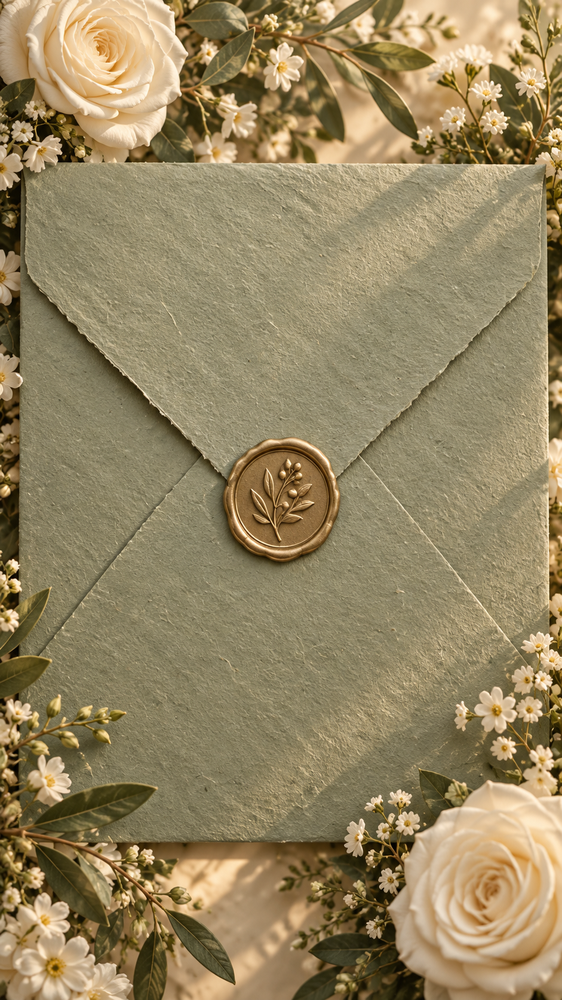
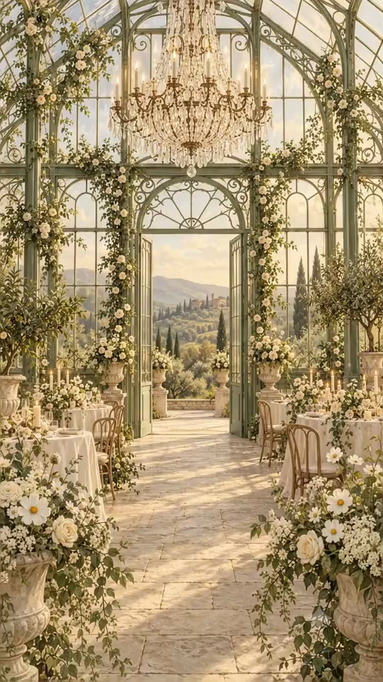
First-frame image prompt
Create one finished 9:16 portrait opening keyframe for a luxury wedding invitation. A closed sage-green handmade cotton-paper envelope seen straight-on, filling most of the foreground, with a circular antique gold wax seal embossed only with a botanical sprig. Delicate ivory roses and foliage at the outer edges. Tactile paper, muted sage and warm cream, soft golden garden light. The envelope completely conceals the scene behind it. Tall, intimate framing; central closure clearly visible with comfortable margins. Use the supplied image only as a style and palette reference for the world hidden behind the closed object. The opening is fully CLOSED. No text, lettering, initials, people, hands, logos, UI, watermark, collage or borders. Exceptional material detail and art direction.
Animation prompt
Create a 4-second silent 9:16 portrait invitation opening film. Use first.png as the opening image and last.png as the exact ending image. The botanical wax seal develops a fine crack; warm sunlight leaks softly through the seam. The seal separates naturally, the envelope flap lifts and the side folds open outward. Move smoothly through the luminous opening to reveal the glass conservatory in the ending reference. Timing: 0–0.4 seconds quiet anticipation; 0.4–1.2 seconds release; 1.2–3.6 seconds opening and reveal; 3.6–4.0 seconds settle onto the supplied ending image. Preserve the ending image composition, geometry, colors, object positions and lighting. Smooth restrained motion, no camera shake, no extra objects or text, no people or hands, no explosive fragments, no full-screen white flash. Final frame must match last.png; do not redesign or reinterpret it.
The garden seal
Conservatory · WEB · 16:9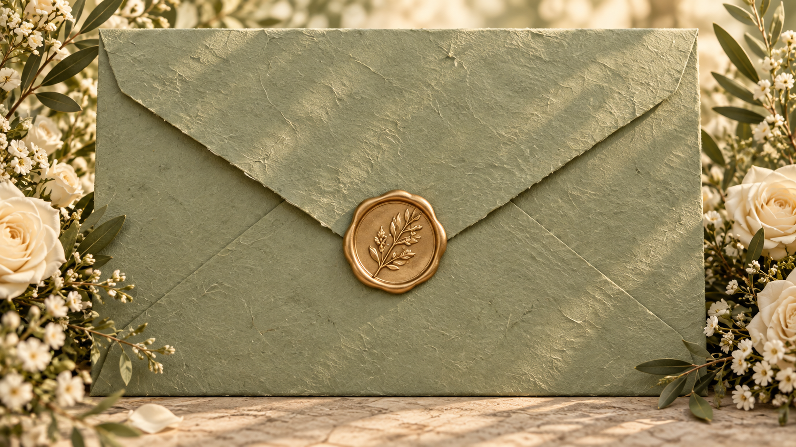
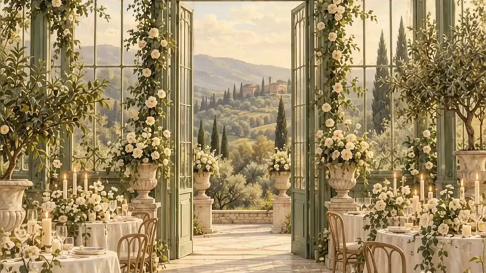
First-frame image prompt
Create one finished 16:9 landscape opening keyframe for a luxury wedding invitation. A closed sage-green handmade cotton-paper envelope seen straight-on, filling most of the foreground, with a circular antique gold wax seal embossed only with a botanical sprig. Delicate ivory roses and foliage at the outer edges. Tactile paper, muted sage and warm cream, soft golden garden light. The envelope completely conceals the scene behind it. A genuinely wide composition with lateral breathing room; closure centered, side decorations confined to outer edges. Do not put a portrait image inside a landscape canvas. Use the supplied image only as a style and palette reference for the world hidden behind the closed object. The opening is fully CLOSED. No text, lettering, initials, people, hands, logos, UI, watermark, collage or borders. Exceptional material detail and art direction.
Animation prompt
Create a 4-second silent 16:9 landscape invitation opening film. Use first.png as the opening image and last.png as the exact ending image. The botanical wax seal develops a fine crack; warm sunlight leaks softly through the seam. The seal separates naturally, the envelope flap lifts and the side folds open outward. Move smoothly through the luminous opening to reveal the glass conservatory in the ending reference. Timing: 0–0.4 seconds quiet anticipation; 0.4–1.2 seconds release; 1.2–3.6 seconds opening and reveal; 3.6–4.0 seconds settle onto the supplied ending image. Preserve the ending image composition, geometry, colors, object positions and lighting. Smooth restrained motion, no camera shake, no extra objects or text, no people or hands, no explosive fragments, no full-screen white flash. Final frame must match last.png; do not redesign or reinterpret it.
The palace doors
Gulmohar · MOBILE · 9:16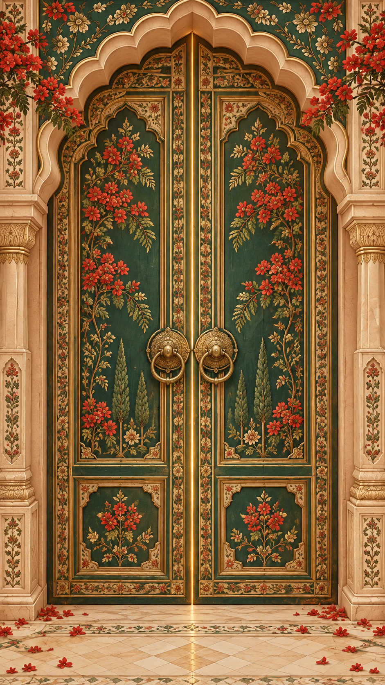
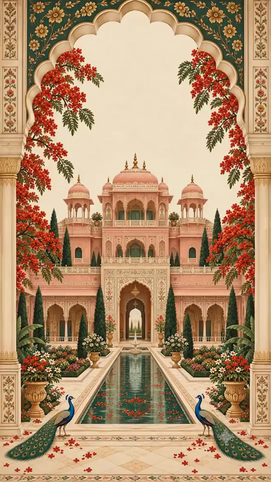
First-frame image prompt
Create one finished 9:16 portrait opening keyframe for a luxury wedding invitation. A majestic closed pair of Indian palace doors viewed straight-on, symmetrical carved blush sandstone arch, aged gold and deep emerald painted wood, restrained handpainted floral inlay, red gulmohar blossoms at the edges. Two elegant brass handles meet near the center. A very fine warm light line at the central seam. Match the reference miniature-painting realism and palette. Tall, intimate framing; central closure clearly visible with comfortable margins. Use the supplied image only as a style and palette reference for the world hidden behind the closed object. The opening is fully CLOSED. No text, lettering, initials, people, hands, logos, UI, watermark, collage or borders. Exceptional material detail and art direction.
Animation prompt
Create a 4-second silent 9:16 portrait invitation opening film. Use first.png as the opening image and last.png as the exact ending image. Warm highlights travel across the brass handles. The two heavy palace doors swing inward with majestic slow weight. Warm golden daylight escapes through the widening gap. Move forward through the doorway, revealing the pink palace and garden from the supplied ending reference. Timing: 0–0.4 seconds quiet anticipation; 0.4–1.2 seconds release; 1.2–3.6 seconds opening and reveal; 3.6–4.0 seconds settle onto the supplied ending image. Preserve the ending image composition, geometry, colors, object positions and lighting. Smooth restrained motion, no camera shake, no extra objects or text, no people or hands, no explosive fragments, no full-screen white flash. Final frame must match last.png; do not redesign or reinterpret it.
The palace doors
Gulmohar · WEB · 16:9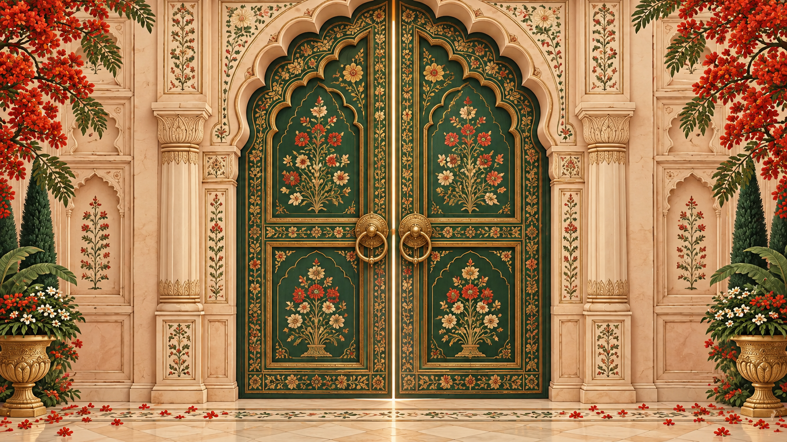
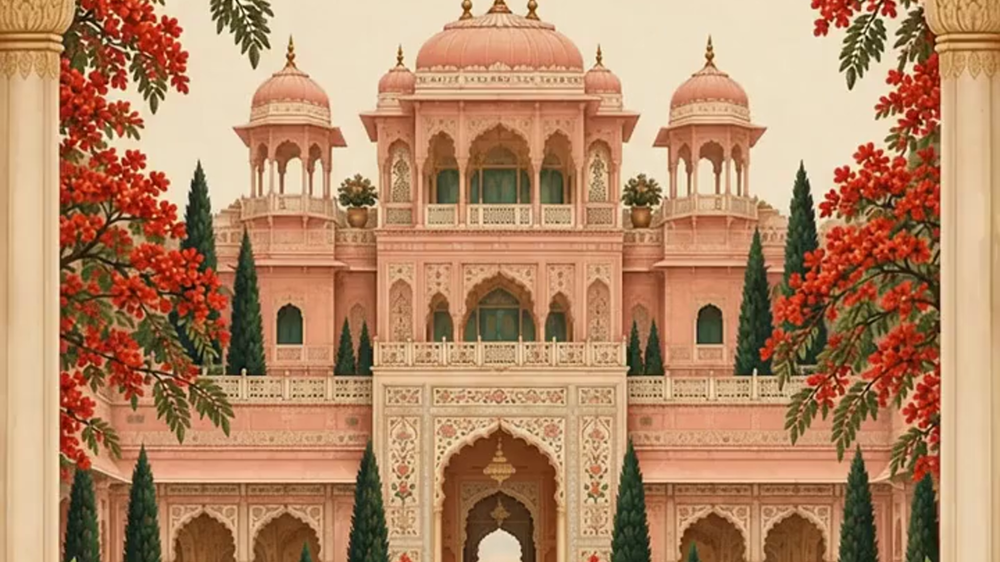
First-frame image prompt
Create one finished 16:9 landscape opening keyframe for a luxury wedding invitation. A majestic closed pair of Indian palace doors viewed straight-on, symmetrical carved blush sandstone arch, aged gold and deep emerald painted wood, restrained handpainted floral inlay, red gulmohar blossoms at the edges. Two elegant brass handles meet near the center. A very fine warm light line at the central seam. Match the reference miniature-painting realism and palette. A genuinely wide composition with lateral breathing room; closure centered, side decorations confined to outer edges. Do not put a portrait image inside a landscape canvas. Use the supplied image only as a style and palette reference for the world hidden behind the closed object. The opening is fully CLOSED. No text, lettering, initials, people, hands, logos, UI, watermark, collage or borders. Exceptional material detail and art direction.
Animation prompt
Create a 4-second silent 16:9 landscape invitation opening film. Use first.png as the opening image and last.png as the exact ending image. Warm highlights travel across the brass handles. The two heavy palace doors swing inward with majestic slow weight. Warm golden daylight escapes through the widening gap. Move forward through the doorway, revealing the pink palace and garden from the supplied ending reference. Timing: 0–0.4 seconds quiet anticipation; 0.4–1.2 seconds release; 1.2–3.6 seconds opening and reveal; 3.6–4.0 seconds settle onto the supplied ending image. Preserve the ending image composition, geometry, colors, object positions and lighting. Smooth restrained motion, no camera shake, no extra objects or text, no people or hands, no explosive fragments, no full-screen white flash. Final frame must match last.png; do not redesign or reinterpret it.
The velvet reveal
Afterhours · MOBILE · 9:16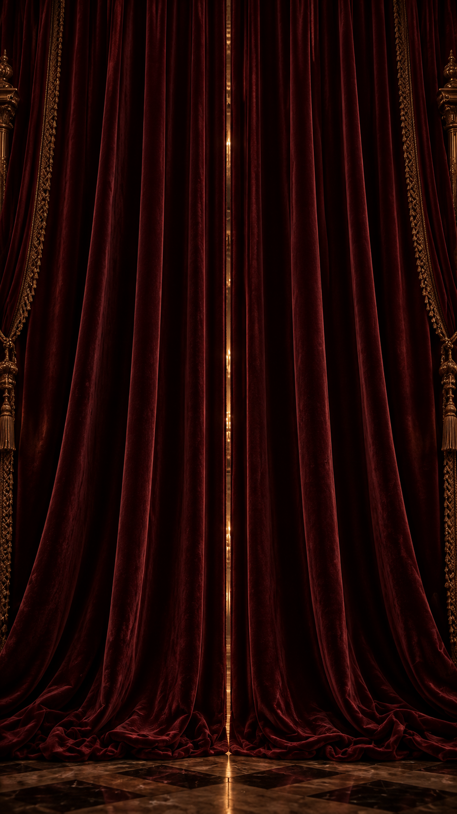
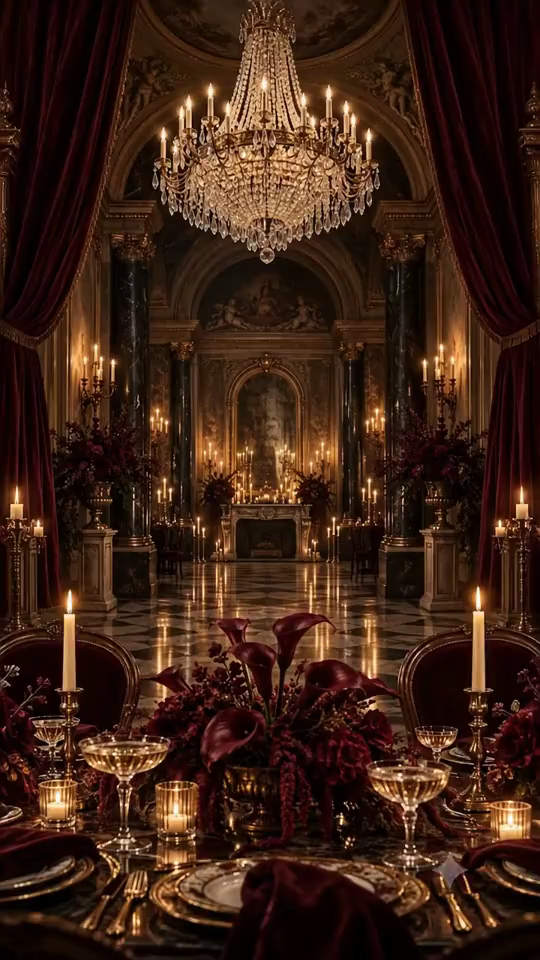
First-frame image prompt
Create one finished 9:16 portrait opening keyframe for a luxury wedding invitation. Closed floor-to-ceiling black-cherry burgundy velvet theatre curtains, dense luxurious folds, understated antique gold braid at the outer edges, symmetrical central seam with a barely visible line of candlelight. Rich dark cinematic atmosphere matching the reference ballroom; subtle warm highlights, no visible room yet. Tall, intimate framing; central closure clearly visible with comfortable margins. Use the supplied image only as a style and palette reference for the world hidden behind the closed object. The opening is fully CLOSED. No text, lettering, initials, people, hands, logos, UI, watermark, collage or borders. Exceptional material detail and art direction.
Animation prompt
Create a 4-second silent 9:16 portrait invitation opening film. Use first.png as the opening image and last.png as the exact ending image. A fine line of candlelight appears at the center. The heavy burgundy velvet curtains draw slowly apart, fabric gathering naturally at both sides. Reveal the candlelit ballroom from the ending reference, with restrained glints on crystal and gold. Camera settles into the exact reference view. Timing: 0–0.4 seconds quiet anticipation; 0.4–1.2 seconds release; 1.2–3.6 seconds opening and reveal; 3.6–4.0 seconds settle onto the supplied ending image. Preserve the ending image composition, geometry, colors, object positions and lighting. Smooth restrained motion, no camera shake, no extra objects or text, no people or hands, no explosive fragments, no full-screen white flash. Final frame must match last.png; do not redesign or reinterpret it.
The velvet reveal
Afterhours · WEB · 16:9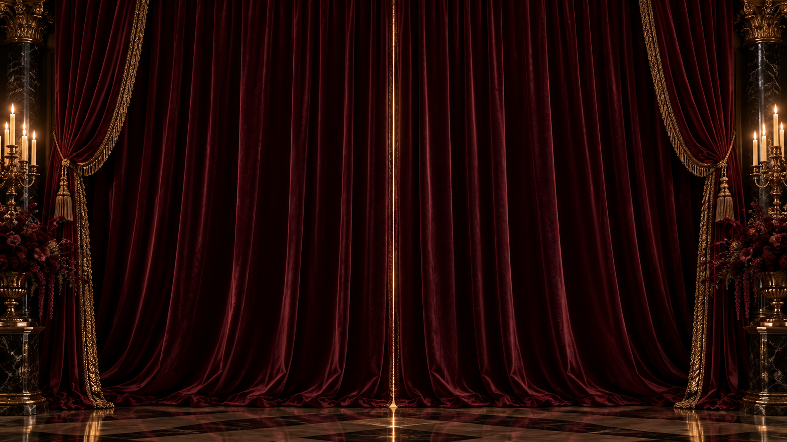
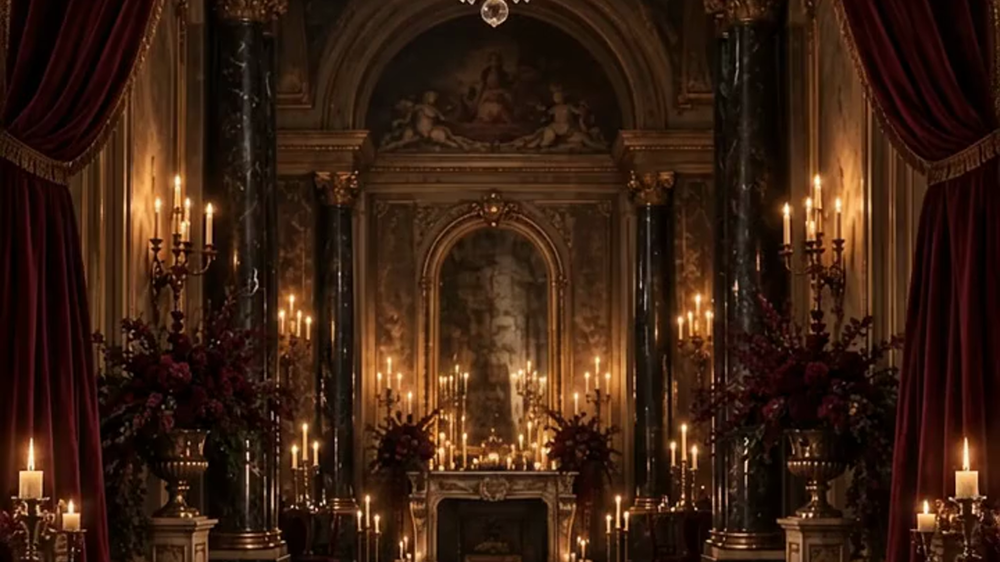
First-frame image prompt
Create one finished 16:9 landscape opening keyframe for a luxury wedding invitation. Closed floor-to-ceiling black-cherry burgundy velvet theatre curtains, dense luxurious folds, understated antique gold braid at the outer edges, symmetrical central seam with a barely visible line of candlelight. Rich dark cinematic atmosphere matching the reference ballroom; subtle warm highlights, no visible room yet. A genuinely wide composition with lateral breathing room; closure centered, side decorations confined to outer edges. Do not put a portrait image inside a landscape canvas. Use the supplied image only as a style and palette reference for the world hidden behind the closed object. The opening is fully CLOSED. No text, lettering, initials, people, hands, logos, UI, watermark, collage or borders. Exceptional material detail and art direction.
Animation prompt
Create a 4-second silent 16:9 landscape invitation opening film. Use first.png as the opening image and last.png as the exact ending image. A fine line of candlelight appears at the center. The heavy burgundy velvet curtains draw slowly apart, fabric gathering naturally at both sides. Reveal the candlelit ballroom from the ending reference, with restrained glints on crystal and gold. Camera settles into the exact reference view. Timing: 0–0.4 seconds quiet anticipation; 0.4–1.2 seconds release; 1.2–3.6 seconds opening and reveal; 3.6–4.0 seconds settle onto the supplied ending image. Preserve the ending image composition, geometry, colors, object positions and lighting. Smooth restrained motion, no camera shake, no extra objects or text, no people or hands, no explosive fragments, no full-screen white flash. Final frame must match last.png; do not redesign or reinterpret it.
The ribbon keepsake
Sunday · MOBILE · 9:16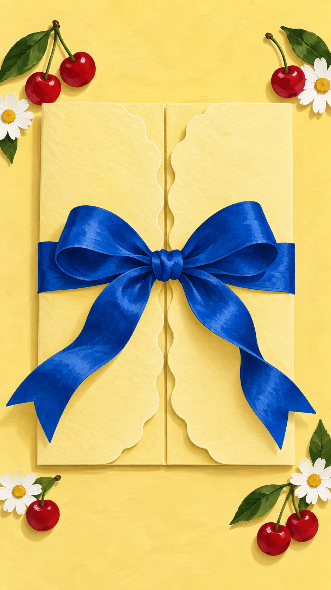
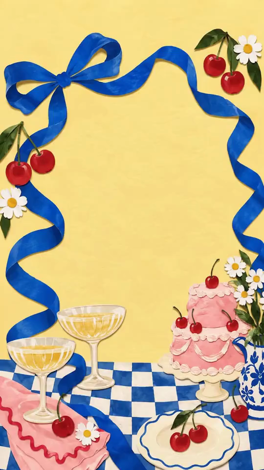
First-frame image prompt
Create one finished 9:16 portrait opening keyframe for a luxury wedding invitation. A closed butter-yellow folded-paper invitation wrapped with a vivid cobalt-blue satin ribbon tied in one generous central bow. Playful refined handpainted gouache and tactile paper style matching the reference, tiny red cherries and white daisies at the perimeter, butter-yellow backdrop. Straight-on flat-lay view, cheerful warm daylight. Tall, intimate framing; central closure clearly visible with comfortable margins. Use the supplied image only as a style and palette reference for the world hidden behind the closed object. The opening is fully CLOSED. No text, lettering, initials, people, hands, logos, UI, watermark, collage or borders. Exceptional material detail and art direction.
Animation prompt
Create a 4-second silent 9:16 portrait invitation opening film. Use first.png as the opening image and last.png as the exact ending image. One cobalt ribbon tail slips gently from the knot; the bow loosens naturally. The yellow paper folds open outward, revealing the celebratory illustrated scene in the ending reference. The opening ribbon clears the image while the existing decorative ribbon, cherries, glasses and cake resolve into their exact ending-reference positions. Maintain the painterly look. Timing: 0–0.4 seconds quiet anticipation; 0.4–1.2 seconds release; 1.2–3.6 seconds opening and reveal; 3.6–4.0 seconds settle onto the supplied ending image. Preserve the ending image composition, geometry, colors, object positions and lighting. Smooth restrained motion, no camera shake, no extra objects or text, no people or hands, no explosive fragments, no full-screen white flash. Final frame must match last.png; do not redesign or reinterpret it.
The ribbon keepsake
Sunday · WEB · 16:9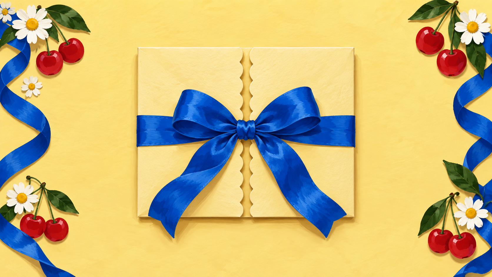
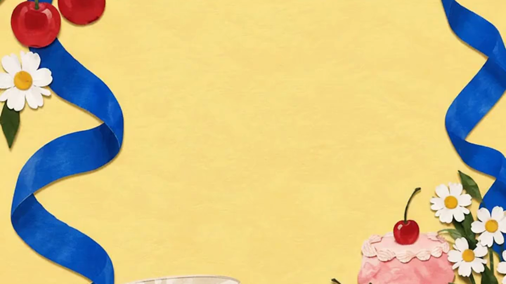
First-frame image prompt
Create one finished 16:9 landscape opening keyframe for a luxury wedding invitation. A closed butter-yellow folded-paper invitation wrapped with a vivid cobalt-blue satin ribbon tied in one generous central bow. Playful refined handpainted gouache and tactile paper style matching the reference, tiny red cherries and white daisies at the perimeter, butter-yellow backdrop. Straight-on flat-lay view, cheerful warm daylight. A genuinely wide composition with lateral breathing room; closure centered, side decorations confined to outer edges. Do not put a portrait image inside a landscape canvas. Use the supplied image only as a style and palette reference for the world hidden behind the closed object. The opening is fully CLOSED. No text, lettering, initials, people, hands, logos, UI, watermark, collage or borders. Exceptional material detail and art direction.
Animation prompt
Create a 4-second silent 16:9 landscape invitation opening film. Use first.png as the opening image and last.png as the exact ending image. One cobalt ribbon tail slips gently from the knot; the bow loosens naturally. The yellow paper folds open outward, revealing the celebratory illustrated scene in the ending reference. The opening ribbon clears the image while the existing decorative ribbon, cherries, glasses and cake resolve into their exact ending-reference positions. Maintain the painterly look. Timing: 0–0.4 seconds quiet anticipation; 0.4–1.2 seconds release; 1.2–3.6 seconds opening and reveal; 3.6–4.0 seconds settle onto the supplied ending image. Preserve the ending image composition, geometry, colors, object positions and lighting. Smooth restrained motion, no camera shake, no extra objects or text, no people or hands, no explosive fragments, no full-screen white flash. Final frame must match last.png; do not redesign or reinterpret it.
The coastal shutters
Azure · MOBILE · 9:16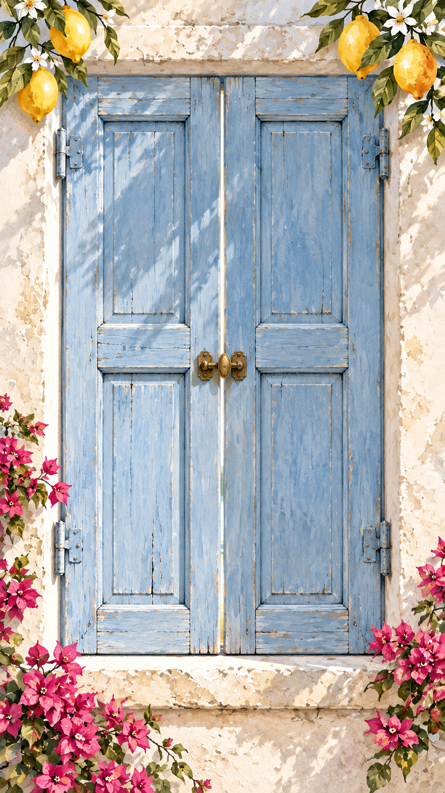
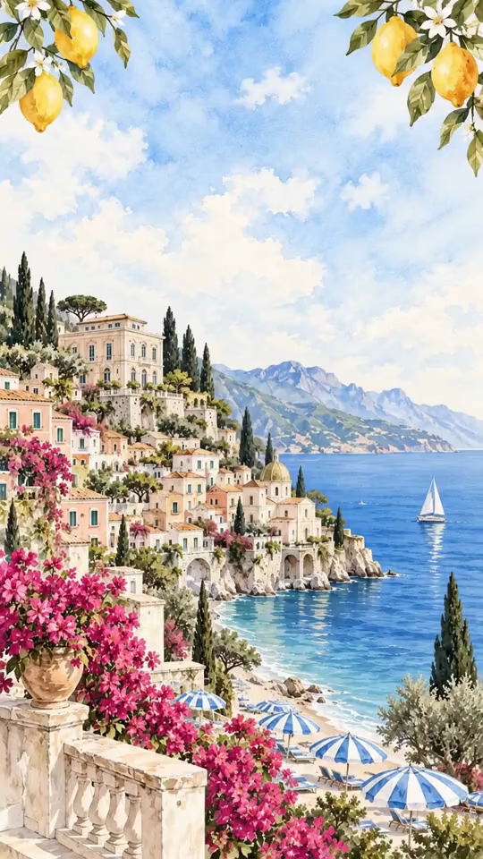
First-frame image prompt
Create one finished 9:16 portrait opening keyframe for a luxury wedding invitation. Closed powder-blue painted wooden Mediterranean shutters in an ivory stucco window frame, viewed straight-on; subtle weathered wood grain, a small antique brass latch, lemon branches at upper corners and restrained pink bougainvillea near lower edges. Sunwashed painterly travel illustration matching the reference. A fine bright line of coastal sunlight along the central seam; the view is fully hidden. Tall, intimate framing; central closure clearly visible with comfortable margins. Use the supplied image only as a style and palette reference for the world hidden behind the closed object. The opening is fully CLOSED. No text, lettering, initials, people, hands, logos, UI, watermark, collage or borders. Exceptional material detail and art direction.
Animation prompt
Create a 4-second silent 9:16 portrait invitation opening film. Use first.png as the opening image and last.png as the exact ending image. The brass latch releases and both blue shutters swing outward. Mediterranean sunlight spills through the widening opening. Move gently forward through the window to reveal the coastal scene in the ending reference. Shutters and frame leave the image completely as the camera settles into the exact coastline composition. Timing: 0–0.4 seconds quiet anticipation; 0.4–1.2 seconds release; 1.2–3.6 seconds opening and reveal; 3.6–4.0 seconds settle onto the supplied ending image. Preserve the ending image composition, geometry, colors, object positions and lighting. Smooth restrained motion, no camera shake, no extra objects or text, no people or hands, no explosive fragments, no full-screen white flash. Final frame must match last.png; do not redesign or reinterpret it.
The coastal shutters
Azure · WEB · 16:9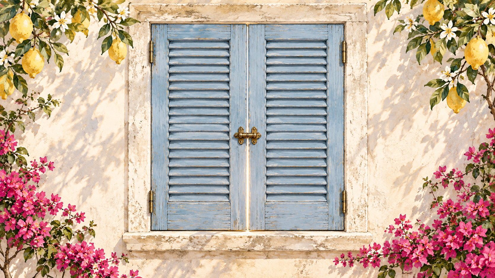
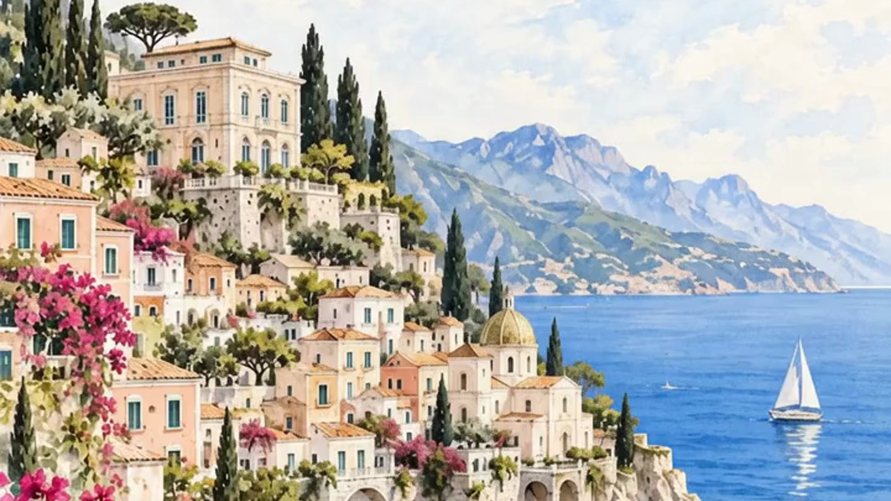
First-frame image prompt
Create one finished 16:9 landscape opening keyframe for a luxury wedding invitation. Closed powder-blue painted wooden Mediterranean shutters in an ivory stucco window frame, viewed straight-on; subtle weathered wood grain, a small antique brass latch, lemon branches at upper corners and restrained pink bougainvillea near lower edges. Sunwashed painterly travel illustration matching the reference. A fine bright line of coastal sunlight along the central seam; the view is fully hidden. A genuinely wide composition with lateral breathing room; closure centered, side decorations confined to outer edges. Do not put a portrait image inside a landscape canvas. Use the supplied image only as a style and palette reference for the world hidden behind the closed object. The opening is fully CLOSED. No text, lettering, initials, people, hands, logos, UI, watermark, collage or borders. Exceptional material detail and art direction.
Animation prompt
Create a 4-second silent 16:9 landscape invitation opening film. Use first.png as the opening image and last.png as the exact ending image. The brass latch releases and both blue shutters swing outward. Mediterranean sunlight spills through the widening opening. Move gently forward through the window to reveal the coastal scene in the ending reference. Shutters and frame leave the image completely as the camera settles into the exact coastline composition. Timing: 0–0.4 seconds quiet anticipation; 0.4–1.2 seconds release; 1.2–3.6 seconds opening and reveal; 3.6–4.0 seconds settle onto the supplied ending image. Preserve the ending image composition, geometry, colors, object positions and lighting. Smooth restrained motion, no camera shake, no extra objects or text, no people or hands, no explosive fragments, no full-screen white flash. Final frame must match last.png; do not redesign or reinterpret it.